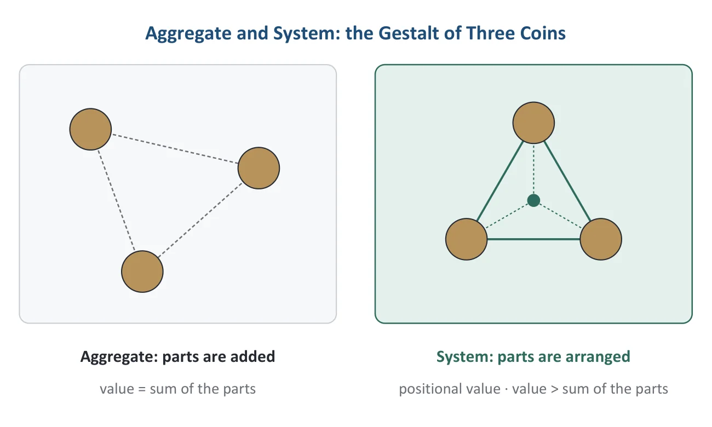

La primera Trinidad experiencial
Original: Apéndice X, La primera Trinidad experiencial (pp. 307–322)
EN ESTE CAPÍTULO
La Trinidad del Paraíso es existencial; la Trinidad Última es experiencial. Esta nueva Trinidad ya funciona como realidad cualificada, pero solo quedará formada de hecho cuando la evolución del Ser Supremo esté completa. Al contar sus miembros, Sadler encuentra que están implicadas más de 1,4 millones de personalidades, y sostiene que precisamente ese tamaño obliga a pensar con precisión qué es una trinidad. Su conclusión es que una trinidad no es una sociedad de personas sino una unión corporativa de Deidades, y que, por lo tanto, el cuerpo de los Arquitectos y el cuerpo de los Creadores Supremos participarán cada uno como una sola entidad de Deidad.
1. Un ser y dos grupos (orig., pp. 307–308)
La composición de la Trinidad Última se da en el Prólogo de El libro de Urantia.
1. La Trinidad Última, presentemente en evolución, finalmente consistirá en el Ser Supremo, las Personalidades Supremas Creadoras y los Arquitectos absonitos del Universo Maestro0:12.6
A primera vista parece triple, como las otras dos Trinidades. En la Trinidad del Paraíso encontramos al Padre, al Hijo y al Espíritu; en la Trinidad Absoluta, a Dios el Supremo, Dios el Último y el Consumador del Destino Universal. Sin embargo, esta «Trinidad intermedia» es diferente: no está formada por tres seres sino por un ser y dos grupos. Sadler cuenta efectivamente las cifras.
| Grupo | Número |
|---|---|
| Ser Supremo | 1 |
| Arquitectos del Universo Maestro | 28.011 |
| Siete Espíritus Rectores | 7 |
| Ancianos de los Días | 21 |
| Hijos Creadores | 700.000 |
| Espíritus Creativos | 700.000 |
| Total | 1.428.040 |
¿Cómo pueden casi un millón y medio de personalidades funcionar dentro de una sola trinidad? Sadler encuentra útil esta cifra sorprendente. Como la Trinidad del Paraíso tiene tres miembros, tendemos a confundir la asociación personal del Padre, el Hijo y el Espíritu (una triunidad) con la Trinidad misma; ante más de 1,4 millones de miembros, tal confusión se vuelve imposible.
2. ¿Qué es una trinidad? (orig., pp. 308–311)
Triunidad y Trinidad
Sadler reúne lo que los documentos dicen sobre la Trinidad del Paraíso y construye su argumento sobre la premisa de que los mismos principios valdrán para otras trinidades. Comienza por la triunidad.
Una triunidad no es una entidad. Es funcional más bien que orgánica. Sus miembros son socios más bien que corporativos.104:3.16
Una trinidad es otra cosa.
La Trinidad es una realidad de Deidad supersumativa que se eventúa de la conjunción de las tres Deidades del Paraíso.104:2.4
Sadler traduce la diferencia al lenguaje de los asuntos humanos. Una triunidad se parece a una sociedad o a una asociación; una trinidad se parece a una corporación. Una corporación no es una persona, y sin embargo es inequívocamente una entidad. Con este espíritu, llama en broma a la Trinidad del Paraíso «Deidad Indivisa, Sociedad Anónima» (Undivided Deity, Incorporated).
| Aspecto | Primera Triunidad | Trinidad del Paraíso |
|---|---|---|
| Definición | asociación personal del Padre, el Hijo y el Espíritu | unión de Deidad del Padre, el Hijo y el Espíritu |
| Carácter | sociedad, unanimidad funcional | entidad corporativa |
| Funciones | amor, misericordia, ministerio; otorgamiento de personalidad, espíritu y mente | administración de la justicia, actitudes de totalidad, supercontrol cósmico |
| Ámbito de interés | criaturas individuales | planetas enteros, universos enteros, el gran universo entero |
Los dos conjuntos de funciones no se superponen. La bondad, la misericordia y la verdad son ministradas una por una por las personas divinas, pero la justicia no es la actitud de ninguna de ellas por separado.
La justicia no es nunca una actitud personal; es siempre una función plural.10:6.2
La junta directiva
Una trinidad no es una persona, pero tampoco se opone a la personalidad. Sus aspectos personales residen en sus miembros individuales, y esos miembros, tomados uno por uno, no son la trinidad.
Tan sólo como ente colectivo son ellos trinidad; eso es trinidad.106:5.3
Sadler lo compara con la junta directiva de una corporación. Los directores pueden llevar sus propias vidas con total independencia de la empresa, y la empresa, como entidad jurídica, existe con independencia de sus asuntos privados. Pero los directores no pueden actuar juntos «como directores» fuera de la empresa. Tenga una trinidad tres miembros o un millón, su estructura orgánica es una entidad distinta de sus miembros individuales.
Solo la Deidad puede llegar a ser trinidad
La clave del análisis es una sola frase del documento 106.
Sólo lo deificado puede volverse trinidad; toda otra asociación es triunidad o triodidad.106:5.4
De ello Sadler extrae una inferencia decisiva. Si el cuerpo de los Creadores Supremos y el cuerpo de los Arquitectos Maestros se unen en la Trinidad Última, deben hacerlo no como multitudes de personalidades sino como dos entidades corporativas de Deidad. Además, puesto que la función de trinidad siempre abarca la realidad de Deidad, y la realidad de Deidad siempre busca la personalización [0:12.4], una nueva personalización de la Deidad surge como consecuencia de la trinidad. Por eso aparece en el universo la Deidad experiencial.
3. Los tres miembros reconsiderados (orig., pp. 312–316)
La Deidad del Ser Supremo
La cifra de 1,4 millones contada arriba no es, en sentido estricto, el número de miembros. Según Sadler, la Trinidad Última tiene exactamente tres miembros, ninguno de los cuales es una personalidad. El primero es relativamente fácil de entender. Cuando la segunda edad del universo haya terminado y Su evolución esté completa, el Ser Supremo participará no como persona sino como Deidad. El miembro es la Deidad de la Supremacía, no la personalidad de Dios el Supremo.
La Deidad del cuerpo de los Arquitectos
El segundo miembro es menos familiar. Los Arquitectos son 28.011 seres superpersonales, y sin embargo la trinidad tiene un solo «miembro Arquitecto». Ese miembro debe ser, por tanto, alguna entidad de Deidad que represente, o una, el espíritu superpersonal de todo el cuerpo, su divinidad absonita y su propósito para el universo maestro. Sadler declara abiertamente que se trata de un concepto nuevo sobre el cual los documentos no dicen nada; sostiene solo que es el único concepto coherente con los hechos conocidos. Si tal entidad necesitara una «voz», cabría imaginar que el Arquitecto Maestro decano hablara por ella, tal como el presidente habla por una junta.
La Deidad del cuerpo de los Creadores Supremos
El tercer miembro es más difícil todavía. El cuerpo de los Arquitectos ha existido desde el principio, pero el cuerpo de los Creadores Supremos es un grupo en evolución, que se origina en el tiempo y aún no está completo. ¿Cómo podría llegar a existir su entidad de Deidad? Casi sin orientación del texto, Sadler se apoya en la lógica y reúne sus pistas.
La primera pista es una frase de la presentación del Ser Supremo en el Prólogo.
El Ser Supremo, actualizándose ahora en los universos evolucionarios, es el correlacionador y sintetizador, en forma de la Deidad, de la divinidad espaciotemporal, la Deidad triuna Paradisiaca en asociación experiencial con los Creadores Supremos del tiempo y del espacio.0:7.9
Sadler cree que las palabras «Deidad triuna del Paraíso» se eligieron con una amplitud deliberada, para indicar que los Creadores Supremos no siempre guardan una misma relación con la Deidad del Paraíso. Los Espíritus Reflexivos, por ejemplo, fueron creados mediante un enlace de la Trinidad del Paraíso con un solo Espíritu Rector [17:2.1], que es la colaboración personal de un único Espíritu Rector. Sin embargo, los siete Espíritus Rectores también pueden unirse como unión séptuple de Deidad y así quedar asociados con la función de trinidad.
Ninguno de los Siete Espíritus es representativo orgánicamente de la Trinidad del Paraíso, pero cuando se unen como Deidad Séptuple, esta unión es en un sentido de deidad no en un sentido personal equivalente al nivel funcional asociable con las funciones de la Trinidad.16:3.16
Aquí Sadler plantea una pregunta. ¿Podría esta unión corporativa de Deidad de los Espíritus Rectores prefigurar la aparición final de una entidad de Deidad que una la divinidad del cuerpo de los Creadores Supremos en su conjunto? Y si los Creadores Supremos logran una «divina unidad de poder y personalidad» [116:2.13], ¿no podría esa unificación producir, además de poder, también una coalescencia de divinidad?
Su conclusión es la siguiente. A medida que los Creadores Supremos desarrollan conjuntamente el poder del Todopoderoso, probablemente están produciendo al mismo tiempo una nueva entidad de Deidad para el cuerpo en su conjunto. No sería una personalización del cuerpo sino una unidad de Deidad proyectada más allá de él. Sadler supone que sus atributos, como los de los Espíritus Rectores, tendrían un carácter supremo, último y supremo-último. Llama a esta entidad «Creadores Supremos Consolidados, Sociedad Anónima» (Consolidated Supreme Creators, Incorporated), y para su voz piensa en el Espíritu Rector Número Siete, que habla por la unión séptuple de Deidad. Como justificación de tal conjetura, señala que los propios documentos alientan la especulación creativa.

Vistos así, los miembros de la Trinidad Última se nombran con exactitud de la siguiente manera: Deidad del Ser Supremo, Deidad del cuerpo de los Arquitectos Maestros y Deidad del cuerpo de los Creadores Supremos. Del mismo modo, la Trinidad del Paraíso, en sentido estricto, une la Deidad del Padre, la Deidad del Hijo y la Deidad del Espíritu.
4. Condición, función y unificación (orig., pp. 316–318)
La Trinidad Última no es todavía plenamente real, y sin embargo sería un error llamarla irreal.
2. El Supremo difícilmente podría funcionar en la Trinidad Última hasta haber alcanzado actualidad completa de estado universal, y sin embargo la Trinidad Última aun ahora es una realidad cualificada, y se os ha informado de la existencia de los Vicegerentes Cualificados del Último.117:7.4
Sadler la describe como una realidad en proceso de llegar a ser. Ya ahora funciona de manera limitada, y su alcance se va ampliando. Los documentos indican que la movilización de los siete cuerpos de la finalidad puede representar una actividad presente de la Trinidad Última [31:10.10]. Su función futura está más clara.
la Trinidad Última experiencial coordina lo trascendental como trascendental.106:4.1
La Trinidad del Paraíso coordina lo último como un absoluto autocualificado. Sadler espera que en las edades postsupremas la función de la Trinidad Última se amplíe hasta que, en lo que respecta a la realidad absonita, complemente y quizá reemplace la coordinación de la Trinidad del Paraíso.
Como la Trinidad Última está compuesta por Deidades derivadas y no es infinita, puede unificarse por completo.
La Trinidad Última se está unificando experiencialmente en cumplimiento0:12.8
Sadler resume sus metas en tres: coordinar el universo maestro en su conjunto, la unificación experiencial de la Trinidad misma y la personalización-poder de Dios el Último. Propone luego la teoría de que estas tres metas avanzan juntas a través de cuatro etapas, en correspondencia con la conquista sucesiva de los cuatro niveles del espacio exterior, y se alcanzan todas a la vez cuando termine la sexta edad del universo, cuando quede establecido el Nivel Espacial Cuartano. Reconoce que los documentos no describen cómo sucederá esto.
Sadler y el texto
En la tabla de Sadler el total de 1.428.040 incluye al Ser Supremo y a los 28.011 Arquitectos; sin embargo, más adelante a veces usa la misma cifra como si fuera la composición del cuerpo de los Creadores Supremos solamente; contado por sí solo, ese cuerpo suma 1.400.028. En el pasaje sobre el miembro Arquitecto, «la segunda trinidad experiencial» es claramente un desliz por la primera. Y la referencia dada para comparar la evolución del Todopoderoso con la aparición del Actor Conjunto, 116:2.15, no existe; el contenido se encuentra en 116:2.14.
5. Nota final: Gestalt y personalidad (orig., pp. 319–322)
Por qué el todo excede la suma de sus partes
Tanto la trinidad como la triunidad poseen funciones que no pueden predecirse a partir de la suma de los atributos de sus miembros [104:3.17]. Sadler busca la razón en el patrón y en el sistema. Entre dos objetos solo puede haber una relación, pero cuando tres o más se juntan, surge un sistema [112:1.17].
En los agregados las partes se suman; en los sistemas las partes se arreglan. Los sistemas son significativos debido a la organización —a los valores de posición.112:1.19
Sadler llama a esta «forma del todo» con la palabra alemana Gestalt y la ilustra con tres monedas. Si se dejan caer tres monedas sobre una mesa, normalmente formarán algún triángulo irregular. Pero si se colocan a distancias iguales, forman un triángulo equilátero, y ahora cada moneda tiene un «valor posicional». Ese valor no procede de ninguna moneda por sí sola; surge de la relación de cada moneda con el todo. Expone lo mismo con nueve desconocidos que entran por casualidad en un campo de béisbol, frente a nueve jugadores de un equipo que sabe trabajar en conjunto.

Las personalidades no se suman
Si ambas poseen una Gestalt, ¿por qué una triunidad es una sociedad y una trinidad una corporación? Sadler encuentra la respuesta en la naturaleza de la personalidad.
no son sumables —son asociables pero no totalizables.112:0.12
La personalidad no puede restarse ni sumarse. La Deidad, en cambio, sí puede sumarse. Sadler habla de una especie de plasticidad de la Deidad que la personalidad no tiene. Concluye, por tanto, que la Deidad emplea a la vez dos técnicas de autorrealización, opuestas en dirección y sin embargo complementarias. La expresión de la personalidad unifica las partes hacia dentro; la formación de trinidades unifica el todo hacia fuera. La una expresa la individualidad; la otra, la totalidad.
En el Paraíso y en el universo central, la unidad de la Deidad es un hecho de existencia. A lo largo y a lo ancho de los universos del tiempo y del espacio en evolución, la unidad de la Deidad es un logro.56:5.4
Sadler sostiene que siempre que tres Deidades funcionan en el mismo nivel de realidad, resulta un sistema, y dentro de ese sistema debe aparecer una trinidad. El vínculo es la divinidad, esa cualidad de la Deidad que unifica y coordina [0:1.16]. Luego lleva el principio un paso más allá. La Trinidad del Paraíso y la Trinidad Última, al ser dos, solo pueden estar relacionadas; pero en cuanto aparece una tercera trinidad, las tres trinidades forman a su vez un sistema, y el resultado es la Trinidad de Trinidades.
Puntos clave
- La Trinidad Última es la primera Trinidad experiencial, cuyos miembros son el Ser Supremo, los Creadores Supremos y los Arquitectos Maestros. Ahora es una realidad cualificada y quedará formada de hecho cuando la evolución del Ser Supremo esté completa.
- Están implicadas más de 1,4 millones de personalidades, pero Sadler ve en esta cifra una ayuda para pensar con precisión qué es una trinidad.
- Una triunidad es una sociedad de personas; una trinidad es una entidad corporativa de Deidades. Solo lo deificado puede llegar a ser trinidad.
- Sadler infiere que cada uno de los dos cuerpos, Arquitectos y Creadores Supremos, participará en la Trinidad como una sola entidad corporativa de Deidad. Esta es su interpretación de asuntos sobre los que los documentos guardan silencio.
- La Trinidad Última coordina lo trascendental, y su función crecerá en las edades postsupremas; su unificación completa conduce a la personalización-poder de Dios el Último.
- Un sistema excede la suma de sus partes porque sus partes están ordenadas y tienen valor posicional. Sadler llama a esto una Gestalt.
- Las personalidades son asociables pero no totalizables. Mediante la expresión de la personalidad y la formación de trinidades, la Deidad logra a la vez la individualidad y la totalidad.